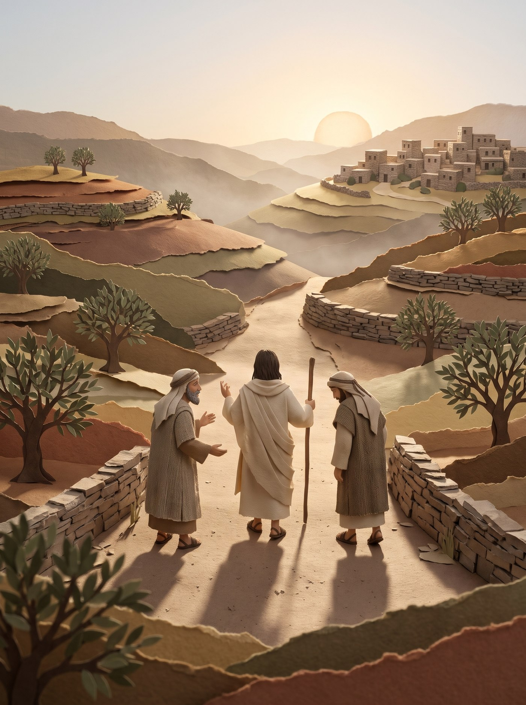

Introducción
Una sola historia
De Emaús a Emaús: el Cordero y el perdón, de principio a fin
Dos hombres en un camino
Recreación: así pudo haber sido. Los hechos están en Lucas 24.
Es domingo por la tarde. El sol ya empieza a bajar sobre los cerros de Judea.
Por un camino de tierra que sale de Jerusalén hacia el oeste caminan dos hombres. Van despacio. No tienen prisa por llegar, y tampoco tienen ganas de quedarse. Uno se llama Cleofas. Del otro, la Biblia ni siquiera nos dice el nombre.
«Y he aquí, dos de ellos iban el mismo día a una aldea llamada Emaús, que estaba a sesenta estadios de Jerusalén» (Lc 24:13).
Sesenta estadios. Unos once kilómetros. Dos o tres horas a pie.
Van hablando de lo mismo una y otra vez. De lo que pasó el viernes. Del maestro de Nazaret al que siguieron, al que vieron sanar enfermos y perdonar pecados, al que vieron calmar una tormenta con una palabra. Y al que vieron morir clavado en una cruz, entre dos ladrones, mientras la gente se burlaba.
Todo terminó. Eso creen.
Y en el camino se les acerca un desconocido. Se pone a caminar con ellos. Y les pregunta:
«¿Qué pláticas son estas que tenéis entre vosotros mientras camináis, y por qué estáis tristes?» (Lc 24:17).
Se detienen. Lo miran como si viniera de otro planeta. ¿Eres el único en Jerusalén que no sabe lo que pasó? Y le cuentan. Y en medio de lo que cuentan, se les escapa una frase que dice todo lo que llevan por dentro:
«Pero nosotros esperábamos que él era el que había de redimir a Israel» (Lc 24:21).
Esperábamos. En pasado. Ya no.
¿Alguna vez dijiste esa palabra? Esperaba que mi matrimonio funcionara. Esperaba que mi hijo cambiara. Esperaba sanarme. Esperaba que Dios hiciera algo. Esos dos hombres caminando hacia Emaús somos nosotros, muchas veces.
Y entonces el desconocido hace algo inesperado. No les da un consejo. No les dice «ánimo». Les abre la Biblia. La que ellos ya conocían, la que habían escuchado en la sinagoga desde niños. Y se la explica de una manera en que nunca la habían escuchado:
«Y comenzando desde Moisés, y siguiendo por todos los profetas, les declaraba en todas las Escrituras lo que de él decían» (Lc 24:27).
Desde Moisés. Por todos los profetas. En todas las Escrituras. Todo hablaba de Él.
Quién era ese desconocido, y qué pasó cuando llegaron a Emaús, lo vas a descubrir en el capítulo 11. Pero lo que les explicó en ese camino, esa conversación de dos o tres horas que nadie grabó, es lo que este libro intenta reconstruir.

Una sola historia
La Biblia no es un libro. Es una biblioteca. Sesenta y seis libros escritos a lo largo de unos mil quinientos años, por unos cuarenta autores distintos: reyes y pastores, un médico, pescadores, un cobrador de impuestos, un fariseo convertido. Escritos en tres idiomas, hebreo, arameo y griego, en tres continentes, en palacios, en cárceles, en el desierto, en el destierro.
Y sin embargo cuenta una sola historia.
Empieza en un jardín, con un hombre y una mujer que se esconden de Dios. Y termina en una ciudad, con Dios viviendo con los hombres y secando sus lágrimas. Y en el medio, todo lo que pasa en el medio, es el camino de vuelta. El camino que Dios mismo abrió para que pudiéramos volver a casa.
Este libro sigue ese camino en trece capítulos. No cuenta todo; eso es imposible en cien páginas. Elige las escenas que mejor muestran la historia completa, y las cuenta despacio, para que puedas verlas, entenderlas y sentirlas.
Dos hilos y una pregunta
A lo largo de todo el libro vas a ir encontrando dos hilos que atraviesan la Biblia de punta a punta.
El hilo del Cordero. En el capítulo 2, un padre sube a un monte con su hijo, y el hijo pregunta dónde está el cordero. En el capítulo 4, la sangre de un cordero en las puertas salva a un pueblo esclavo en Egipto. En el capítulo 8, un profeta en el río Jordán señala a un hombre y dice: ese es el Cordero de Dios. Y en el capítulo 13, en medio del trono del universo, hay un Cordero. Es así como Dios nos salva.
El hilo del perdón. En el Antiguo Testamento, solo Dios podía perdonar, y el perdón pasaba por el templo y por los sacrificios, una y otra vez, año tras año. Y un día aparece un hombre que perdona Él mismo, sin templo y sin sacrificio. Y la gente, escandalizada, hace la pregunta que recorre la segunda mitad de este libro:
¿Quién es este?
La hacen unos pescadores aterrados en una barca. La hacen los invitados de un fariseo cuando una mujer llora a los pies de Jesús. La hace toda Jerusalén cuando lo ve entrar montado en un burrito. Este libro no te va a dar la respuesta masticada. Te va a llevar, escena por escena, para que llegues a ella.
Cómo leer este libro
Cada capítulo tiene las mismas partes, para que te ubiques fácil.
La escena. Empieza siempre con una historia contada como si estuvieras ahí. Es una recreación: los hechos son los de la Biblia, pero los detalles de lo que los personajes pensaban, sentían o veían se imaginan a partir del texto y de lo que se sabe de la época. Siempre está marcado así. Dentro de la escena vas a encontrar un párrafo llamado «Su lucha»: la lucha interna de uno de los personajes. Porque Dios no eligió a gente perfecta. Mintieron, tuvieron miedo, se equivocaron, dudaron. Solo Jesús no falló.
La historia según la Biblia. Los versículos clave del capítulo, tal como están escritos. Todas las citas son de la versión Reina-Valera 1960, la más leída en español.
Los recuadros. «Lo que dice la historia» trae lo que cuentan los historiadores antiguos, como Flavio Josefo o Tácito, y lo que ha encontrado la arqueología. «El lugar hoy» te dice dónde pasó y qué sigue en pie. En la segunda parte, «Lo que estaba escrito» muestra lo que los profetas anunciaron siglos antes y cómo se cumplió. Y a veces aparece «La pregunta difícil», porque la Biblia no esconde las preguntas difíciles, y este libro tampoco.
La sombra de Jesús. Cómo esa historia, aunque haya pasado siglos antes, ya apuntaba a Él.
Para seguir leyendo. Qué capítulos de la Biblia leer después, si quieres ir a la fuente. Ese es, al final, el objetivo de este libro: que puedas abrir la Biblia tú solo, y entenderla.
No hace falta saber nada antes de empezar. No hace falta ir a ninguna iglesia, ni pertenecer a ninguna religión. Solo hace falta ganas de caminar un rato, como esos dos hombres en el camino a Emaús.
Vamos.